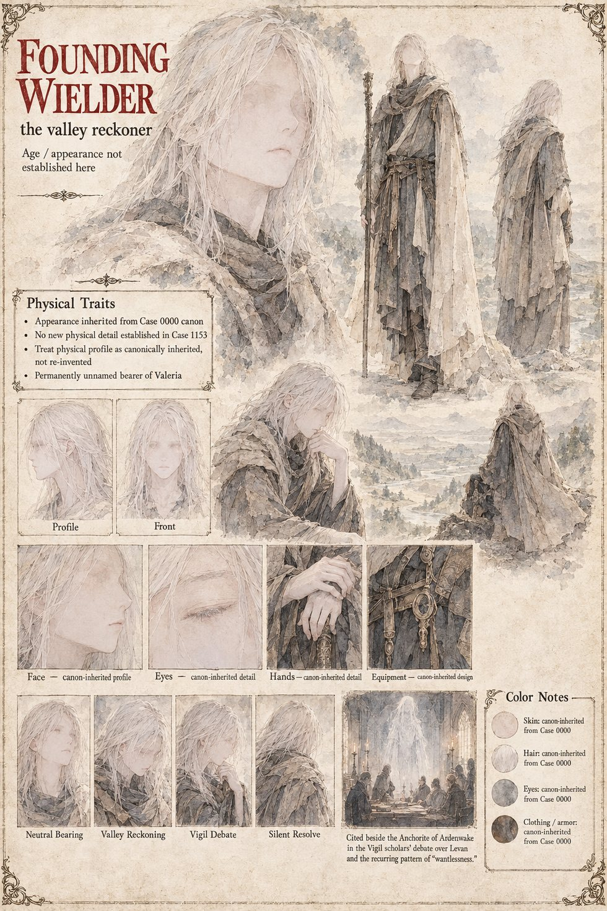

The Founding Wielder
The valley reckoner · the boy of Case 0000 · permanently unnamed · cited here secondhand
The first bearer of Valeria, cited at Ardenwake as a nameless valley reckoner: the boy of Case 0000, who is never given a name that survives the telling. His namelessness has given rise to the order's oldest and least examined superstition, that renouncing one's name is itself part of the mechanism, which the Vigil's scholars use to argue that Levan, known across three kingdoms by a story harder to renounce than a crown, is the furthest thing from the pattern. The sheet adds no new physical detail, treats his appearance as canonically inherited from Case 0000, and draws him pale-haired in layered, weathered cloth, shown in the margin of the Vigil scholars' debate.